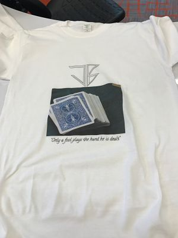

Rotation 3
T-Shirt Printing
This week, we started by working with printing t-shirts. I made a design on good drawings and then, using Corel Draw, converted it into a GT-3 file.
Pictured below is the final result
